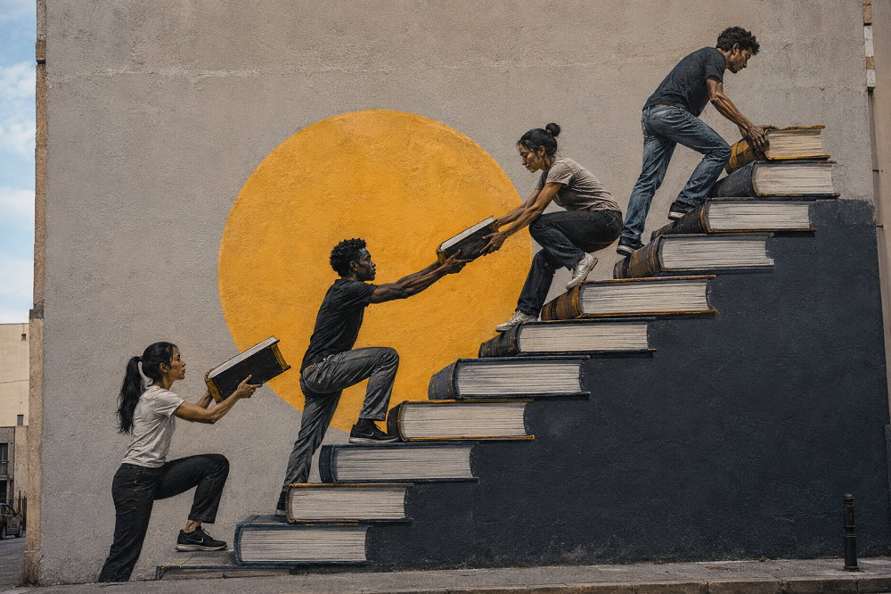

Home > Blog The Log of a Librarian > Community-Centered Librarianship With a Decolonial Turn (05)
Community-Centered Librarianship With a Decolonial Turn (05)
Building Spaces for Resistance
When Safe Space Is Not Enough
This post is part of a series that reclaims community-centered librarianship from its institutional distortions, returning it to its roots in struggle, mutual aid, and collective survival. It treats libraries not as neutral services but as contested infrastructures shaped by power, resistance, and memory, and explores librarianship as solidarity work grounded in real communities, real conflicts, and the ongoing tension between institutional control and collective autonomy. Check all the posts in this section's index.
The Problem with "Safe Space"
In contemporary institutional language, the library is often described as a safe space.
The phrase is not empty. In contexts marked by racism, poverty, gendered violence, migration trauma, political repression, and social abandonment, safety matters. A place where people can enter without being immediately exposed, judged, expelled, or threatened can be essential. For many communities, the possibility of remaining somewhere without having to justify one's presence is already significant.
But the phrase also has limits. When "safe space" becomes an institutional label, it can lose its force. It may come to mean little more than a welcoming environment, a non-conflictive atmosphere, or a carefully managed zone of inclusion. Under that logic, safety is detached from power. It becomes a matter of tone, design, programming, or behavioral policy, rather than a response to real conditions of harm.
A space can be calm without being safe. It can be inclusive without being transformative. It can be welcoming while leaving untouched the structures that produce vulnerability in the first place.
That is the problem.
In community-centered librarianship, safety cannot be reduced to comfort. It has to be understood in relation to threat, conflict, protection, and collective capacity. Otherwise, the "safe space" becomes anesthetic: a soft institutional surface placed over unresolved violence.
Safety Is Political
No space is safe in general. A library may be safe for some people and hostile to others. It may protect certain forms of speech while disciplining others. It may offer refuge from the street while reproducing surveillance inside its walls. It may claim openness while enforcing rules that exclude those who do not fit expected patterns of behavior, language, documentation, or respectability.
Safety is always situated. For undocumented migrants, safety may mean not being exposed to state agencies. For women facing violence, it may mean confidentiality, discretion, and trusted networks. For racialized communities, it may mean freedom from police presence or institutional suspicion. For young people, it may mean access to a space not controlled by schools, families, churches, or gangs. For workers, tenants, and displaced communities, it may mean a place where information can circulate without immediate repression.
These forms of safety are not created by declaring a space safe. They require decisions.
They involve policies, alliances, silences, refusals, and forms of protection that may conflict with institutional expectations. They require asking who is being protected, from what, by whom, and at what cost.
This is where the neutral language of safe space begins to collapse. Real safety is not produced by neutrality. It is produced by taking positions within unequal conditions.
From Shelter to Infrastructure
A community library can offer shelter. But if it stops there, its political capacity remains limited.
Shelter responds to immediate exposure. It provides a temporary interruption of harm: a room, a table, a chair, warmth, silence, internet access, information, company. These things matter. For people living under pressure, small forms of stability can be decisive.
But community-centered librarianship cannot be reduced to shelter.
The deeper question is whether the library also helps communities organize the conditions of their own defense, memory, learning, and action. That is where the idea of infrastructure becomes important.
An infrastructure does not simply receive people. It allows things to happen. It supports circulation, coordination, continuity, and collective work. In this sense, a library can become more than a protected room. It can become a place where meetings are held, documents are stored, campaigns are prepared, testimonies are gathered, skills are shared, and strategies are discussed.
This does not require theatrical radicalism. It does not require turning every library into a headquarters or every librarian into a militant hero. That would be another fantasy.
It requires recognizing that communities under pressure need more than symbolic inclusion. They need material conditions for acting together.
A library that provides those conditions is no longer merely a safe space. It becomes part of the community's capacity to resist.
Healing Without Pacification
Healing is also part of community librarianship. But it must be handled carefully.
Communities affected by violence, displacement, poverty, discrimination, or institutional neglect often need spaces where grief, fatigue, fear, and fragmentation can be addressed. Libraries can support that work through listening, memory practices, reading groups, language support, intergenerational encounters, legal information, cultural activities, and access to resources that help people understand what has happened to them.
But healing can also be institutionalized in ways that pacify conflict.
When healing is detached from justice, it can become a demand for adaptation. Communities are invited to recover from harm without challenging its causes. Pain is acknowledged, but anger is treated as excessive. Trauma is recognized, but political analysis is avoided.
A community library should not turn suffering into a managed emotional program.
Healing, in this context, is not the opposite of resistance. It is one of its conditions. People cannot organize indefinitely from exhaustion, fear, and isolation. They need spaces where trust can be rebuilt, where memory can be shared, where language can return, and where collective life can be repaired.
But repair does not mean pacification. It means restoring the capacity to act.
Radical Pedagogy in Ordinary Practice
Libraries are often associated with education, but usually in a restricted sense: literacy, information skills, reading promotion, digital inclusion, homework support, access to resources.
All of that may be necessary. None of it is enough.
In spaces of resistance, education is not just the transmission of skills. It is the development of collective interpretation. Communities need to read documents, but also institutions. They need to understand laws, but also power. They need access to information, but also the ability to connect scattered facts into usable knowledge.
This is where radical pedagogy enters library practice. It does not have to appear under that name. It may take the form of a workshop on tenant rights, a reading group on local history, a session on how to document police abuse, a collective mapping of environmental damage, a conversation about labor exploitation, or a training on how to preserve community records.
The key issue is not the format. It is the orientation. Radical pedagogy treats people not as beneficiaries of instruction, but as subjects capable of producing analysis from their own conditions. It does not deliver knowledge downward. It organizes situations in which knowledge can be built, tested, disputed, and used.
In that sense, the community library becomes a pedagogical infrastructure: a place where people learn not only to access information, but to interpret the world that has made information necessary.
Risk, Visibility, and Protection
If libraries become spaces for resistance, they also become exposed to risk.
This risk is not evenly distributed. Communities may face surveillance, eviction, police attention, political retaliation, funding cuts, media distortion, or internal conflict. Librarians and library workers may face institutional pressure, accusations of partisanship, disciplinary measures, or professional isolation.
For that reason, building spaces for resistance cannot mean romanticizing exposure. Visibility is not always good. Publicity is not always protection. Documentation is not always harmless. Some forms of memory must circulate carefully. Some names should not be recorded. Some meetings should not be advertised. Some materials should not be made openly accessible without consent.
A community-centered library must understand these tensions.
The question is not how to make everything visible. The question is how to protect the conditions under which communities decide what should be visible, what should remain guarded, and who has the authority to decide.
This is part of the work. Not an ethical decoration added later, but an operational requirement.
Spaces That Hold the Line
Building spaces for resistance does not mean abandoning care. It means refusing to separate care from power.
A community library can be protective without becoming passive. It can support healing without pacifying anger. It can teach without domesticating knowledge. It can welcome people without absorbing them into institutional scripts. It can provide safety while recognizing that safety, under unequal conditions, is always political.
This requires a different understanding of what library space is. Not a neutral container. Not a service point. Not a decorative symbol of inclusion. Not a quiet refuge from the world.
A community-centered library can be a place where the world is read from below, where memory is kept under pressure, where people gather without asking permission to exist, and where knowledge becomes part of collective survival.
That does not make the library an epicenter of uprising by default.
But it can make it available to the forms of life, organization, and refusal from which resistance sometimes grows.